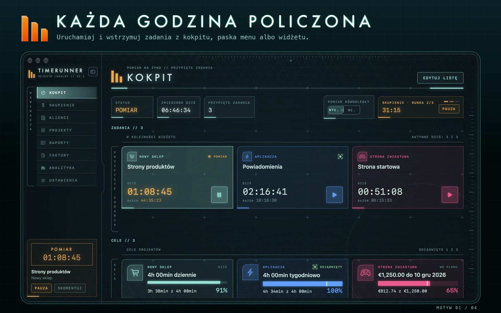
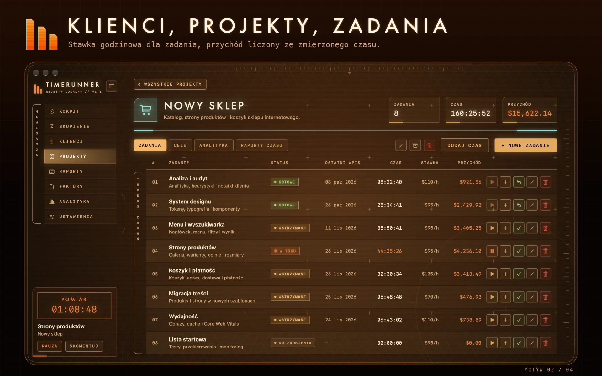
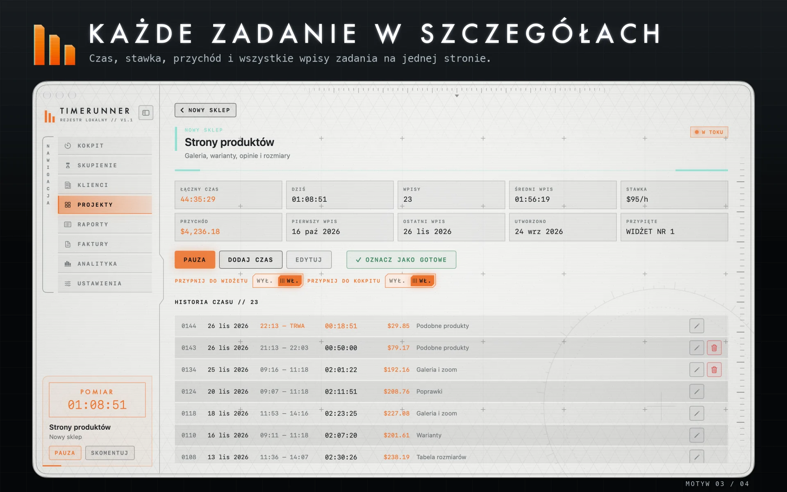
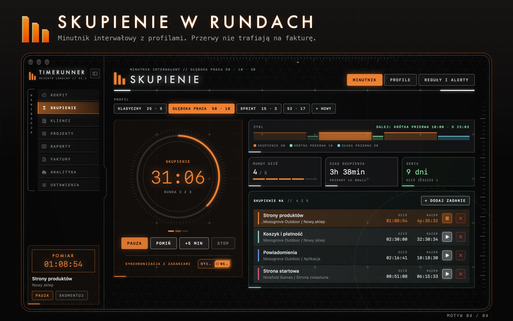
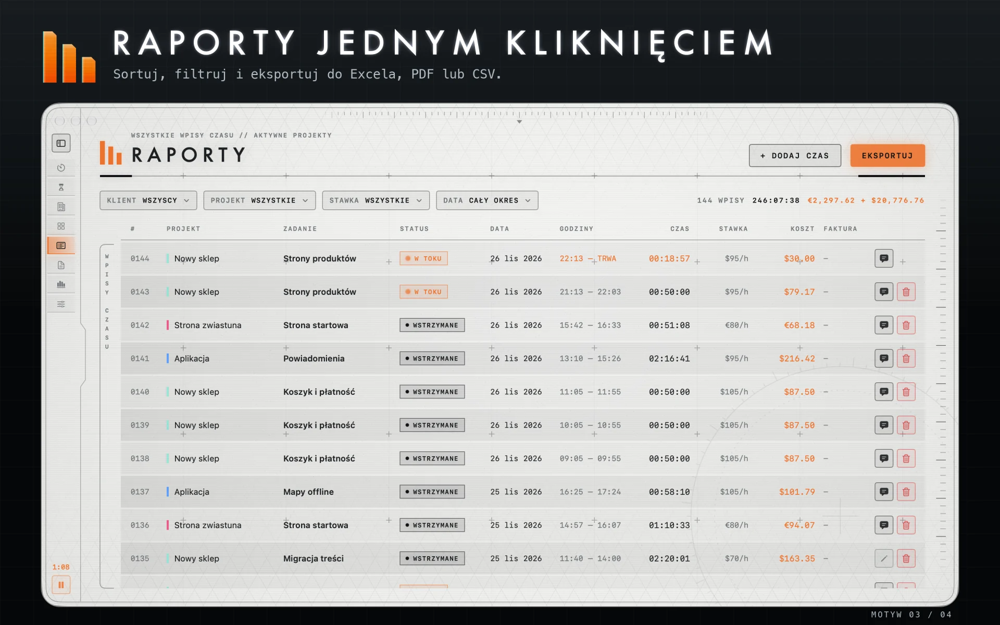
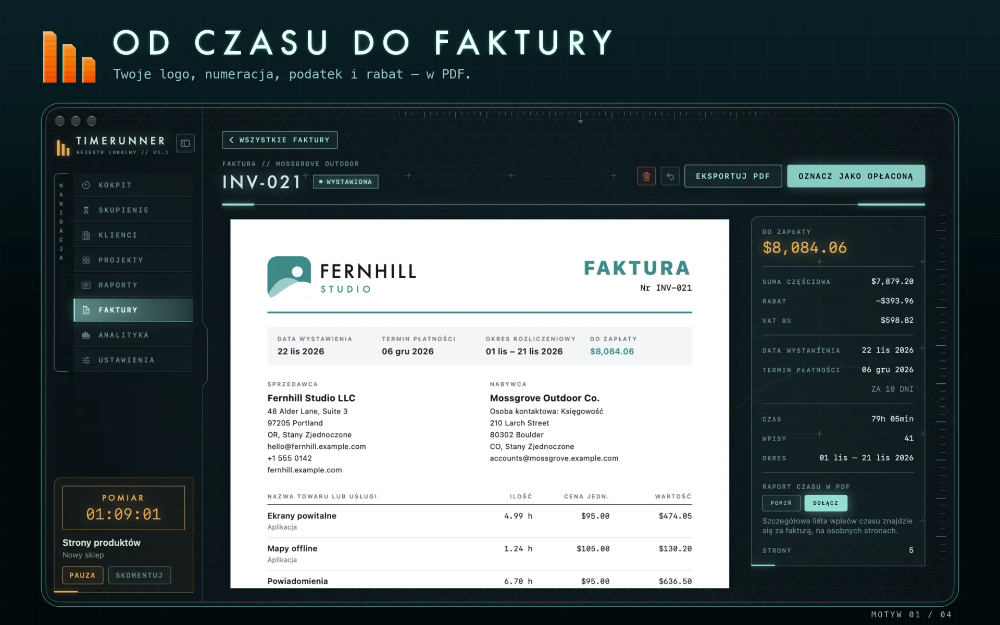
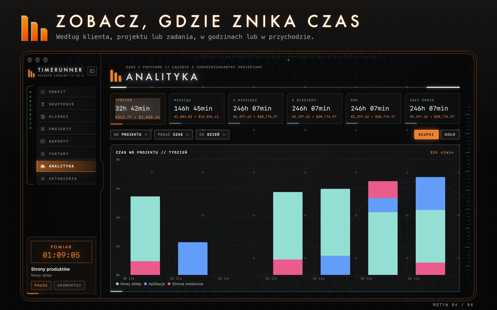
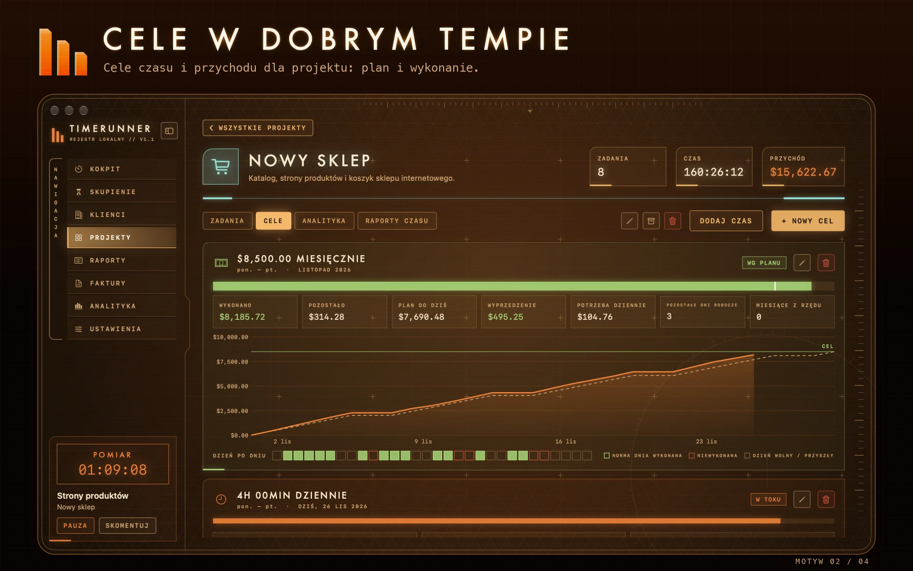
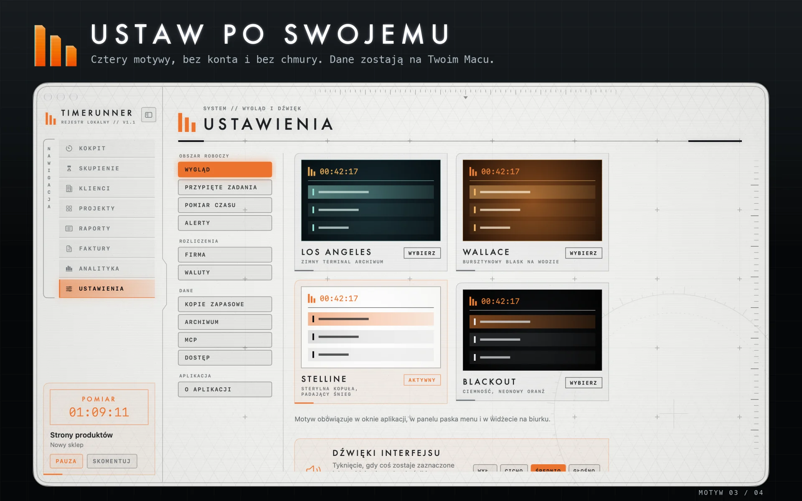
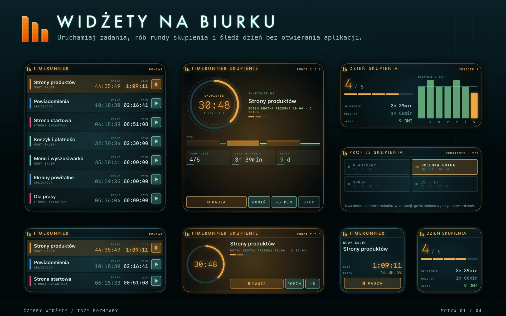

Czas mierzony tak,
jak go rozliczasz
Ewidencja czasu jak z przyszłości: timery, skupienie Pomodoro, przychód na bieżąco i faktury PDF w jednej neonowej konsoli dla Maca. Prywatnie. Pięknie. Miesiąc za darmo.


- Klienci → projekty → zadania → wpisy czasu, ze stawką i walutą dla zadania
- Jeden stoper naraz albo kilka równolegle

- Dodaj czas, którego nie zmierzono, z dniem, długością i komentarzem
- Statusy: Do zrobienia, W toku, Wstrzymane, Gotowe

- Minutnik interwałowy w stylu Pomodoro: rundy skupienia, krótkie przerwy i długa po ostatniej
- Profile: 25·5, 50·10, 15·3, 52·17 — i własne
- Może uruchamiać stoper zadania i wstrzymywać go na przerwy, żeby odpoczynek nie trafiał na fakturę
- Dźwięki, powiadomienia, ostrzeżenie przed końcem, ekran przerwy
- Lista zadań dla Skupienia: sesje idą tylko za zadaniami, które na niej umieścisz

- Sortowalna tabela wszystkich wpisów z filtrami klienta, projektu, stawki i daty
- Eksport do skoroszytu Excela (.xlsx), PDF lub CSV

- Faktury PDF z niezafakturowanego czasu klienta: całość lub okres, pozycja dla zadania, projektu lub wpisu
- Twoje logo, kolor, dane do płatności, numeracja, podatek i rabat
- Szkic → Wystawiona → Opłacona, a przeterminowanie liczone od terminu płatności
- Czas z wystawionej faktury nigdy nie jest fakturowany dwa razy

- Sumy z tygodnia, miesiąca, kwartału, roku lub całego okresu: według klienta, projektu lub zadania, w godzinach lub w przychodzie

- Cele czasu lub pieniędzy dla projektu: na dzień, tydzień lub miesiąc albo do wybranej daty
- Postęp, tempo, wykres planu i wykonania oraz znacznik dla każdego dnia

- Cztery motywy, od turkusowego neonu po zwykłą czerń
- Sekcje, których nie używasz, można ukryć
- Okno zmniejsza się do rogu ekranu i dalej jest przydatne
- W dziewięciu językach: angielskim, hiszpańskim, francuskim, niemieckim, włoskim, polskim, białoruskim, japońskim i koreańskim

- Jedno kliknięcie, żeby uruchomić lub wstrzymać: w aplikacji, na pasku menu, na biurku
- Trzy widżety: minutnik, Twój dzień, Twoje profile
- Przypnij zadanie osobno do kokpitu i do widżetu na biurku
- Bez konta, bez analityki, bez reklam: nic z tego, co wpisujesz, nie opuszcza Twojego Maca
- Automatyczne codzienne kopie zapasowe na Macu i w wybranym folderze
- Opcjonalna blokada Touch ID
- Dowolna waluta krajowa i dziesięć największych kryptowalut
- Wbudowany konektor MCP łączy TimeRunner z Claude, ChatGPT, Codex, Cursor, VS Code i innymi narzędziami AI na Twoim Macu
- Poproś własnymi słowami — „uruchom stoper zadania Design”, „dopisz wczoraj dwie godziny dla Acme”, „zamknij to zadanie” — a asystent zrobi to w TimeRunner
- Może tworzyć klientów, projekty i zadania, uruchamiać i zatrzymywać stopery, dopisywać czas, zamykać zadania i archiwizować projekty
- Poproś o raport: godziny i przychód według klienta, projektu lub zadania, w podziale na dni, tygodnie lub miesiące; faktury, otrzymane płatności i należności
- Wyłączony, dopóki go nie włączysz, na życzenie tylko do odczytu, a przez niego nigdy nie da się niczego usunąć
MIESIĄC ZA DARMO, POTEM WYBIERASZ
TimeRunner pobierzesz za darmo, a przez pierwszy miesiąc wszystko jest bezpłatne. Potem:
Płatność co miesiąc
Płatność raz w roku albo w 12 miesięcznych ratach tam, gdzie App Store je oferuje
Jedna płatność, nic się nie odnawia
Bez planu TimeRunner przechodzi w tryb tylko do odczytu: Twoje wpisy zostają na Macu i nadal można je otwierać, eksportować i zapisywać w kopii zapasowej.
Subskrypcja obciąża Twoje konto Apple i odnawia się automatycznie na ten sam okres i w tej samej cenie, chyba że zostanie anulowana co najmniej 24 godziny przed końcem okresu. Możesz nią zarządzać lub ją anulować w ustawieniach konta App Store.
Ceny w Stanach Zjednoczonych. W innych krajach App Store pokazuje własne.